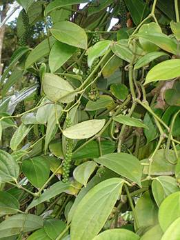
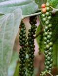

HORT 282 :: Lecture 03 : : PEPPER

PEPPER
(Piper nigrum, Piperaceae)
Black pepper, the king of spices, is obtained from the perennial climbing vine, Piper nigrum which is indigenous to the tropical forests of Western Ghats of South India. It is one of the important and earliest known spices produced and exported from India. It is grown in about 1.36 lakhs ha land with an annual production of 32 thousand tonnes, largely distributed in Kerala (94%), Karnataka (5%), the rest being Tamil Nadu, Andhra Pradesh and north eastern states especially Assam. India accounts for 54 per cent of the total area under pepper in the world but its share of production is only 26.6 per cent where as the other countries like Brazil, Indonesia, Malaysia accounts for lesser percentage of area but with more share in the total production due to their productivity. Annually, India is exporting about 41000 tones of black pepper earning a foreign exchange of Rs.240 crores.
BOTANY
It is a climbing evergreen plant and grows to a height of 10m or more. The vines branch horizontally from the nodes and do not attain length, but the full grown vines completely cover the standard presenting the appearance of bush. Based on growth habits, morphological characters and biological functions, five distinct types of stem portions can be identified in the shoot system of a pepper vine.
- Main Stem which originate from a seed or from a stem cutting. It climbs on a support with the aid of aerial or adventitious roots.
- Runner Shoots are produced from the basal portion of the main stem, growing at right angle to the main stem, usually restricted up to 50 cm from the ground
- Fruiting branches (Plagiotropes) are produced from the nodes of the main stem and they grow laterally more or less at right angles to the main stem, bearing the spikes.
- Topshoots (Orthotropes): After a period of vertical growth, the top portion of the main shoots attains a bushy appearance with shorter, thicker internodes and profuse branching with large number of adventitious roots at the nodes. This portion of the main shoot is called top shoots or orthotropes.
- Hanging shoots (Geotropes): In a fully grown vine, some of the plagiotropes at the top portion are seen to give rise to a special type of shoots which hang down and grow geotropically.

The leaves are broadly lanceolate, but wide variations occur in leaf shape and are arranged alternately. The inflorescence is a catkin produced at the nodes opposite to the upper leaves. Flowers are very minute. Monoecious or dioecious or hermophrodite forms occur in different varieties. High yielding forms should have more percentage of bisexual flowers and in cultivated varieties these flowers will be more than 80 per cent. In case, if it is less, it is compensated by the higher per cent of female flowers. The male flowers are very few, 1 to 19 per cent in different varieties. The fruit is a single seeded berry, which has a thin, soft pericarp surrounding the seeds. It takes approximately six months to mature after flowering. Fruit setting depends upon the sex of the vine; season etc. and it will be normally about 50 percent in cultivated varieties. Sometimes, spike shedding occurs to the extent of 14 to 65 percent causing considerable loss. Spraying of IAA 50 ppm or planofix 50 ppm and or zinc 0.5 per cent at the time of berry setting stage reduces spike shedding.
Climate and soil
Pepper is a plant of humid tropics requiring adequate rainfall and humidity. The hot and humid climate of sub mountainous tracts of Western Ghats and Eastern Ghats is ideal for its growth. It grows successfully between 200 north and south latitude and from sea level up to 1500 meters above MSL. The crop tolerates temperatures between 100 and 400C. A well distributed annual rainfall or 125-200 cm considered ideal for pepper.
Pepper can be grown in a wide range of soils such as clay loam, red loam, sandy loam and lateritic soils with a pH of 4.5 to 6.0, though in its natural habitat, it thrives best on virgin soil rich in organic matter.
Varieties
Majority of the cultivated types of pepper are monoecious. Over 75 cultivars of pepper are being cultivated in India; Karimunda is the most popular of all the established cultivars at Kottanadan, Narayakkodi, Aimpiriyan, Neelamundi, Kuthiravally, Balancotta, Kulluvally, Malligesara and Uddagare. Recently a number of improved cultivars have been evolved and released for cultivation.
Improved varieties of Black pepper
|
Name |
Percentage |
Other attributes |
1. |
Panniyur-1 |
F1 hybrid between |
2.5kg/vine, 1200 kg/ha, more adaptable to open conditions, sensitive to excess shade, dry recovery: 35.3% oleoresin: 11.8% essential oil: 3.5% piperine 5.3% |
2 |
Panniyur-2 (Krishna) |
OP seedlings of Balankotta |
4.5kg/vine, 2828 kg/ha, shade tolerant, medium sized berries, dry recovery: 35.7%, oleoresin: 10.9%, piperine: 6.6%. |
3 |
Panniyur-3 (Shima) |
F1 hybrid between |
4.4kg/vine, 2169 kg/ha, excessive vegetative vigour, long spike, bold berries, prefers open condition, dry recovery: 27.8% Oleoresin: 12.6%. Piperine: 5.2% |
4 |
Panniyur-4 |
Selection from Kuthiravally type II |
2.3kg/vine, 1419 kg/ha, stable in yield, performs well even under adverse conditions, dry recovery: 34.7%, oleoresin: 9.2% |
5 |
Panniyur-5 |
O.P Progeny of Perumkodi |
2.75kg / vine, 3075 kg/ha, suitable for intercropping in Arecanut gardens dry recovery: 35.7%, Piperine:5.3%, Oleoresins:12.33%, essential oil:3.80% |
6 |
Sreekara |
A selection from Karimunda(K.S.14) |
4.8kg/vine, 2352 kg/ha, tolerant to drought dry recovery 35%, piperine: 5.0%, Oleoresins: 13%, essential oils: 7% |
7 |
Subhakara |
A selection from Karimunda (K.S.27) |
4.2kg/vine, 2677 kg/ha, dry recovery: 35%, piperine: 3.4%, oleoresins: 12%, essential oils:6%. |
8 |
Panchami |
A selection from Aimpiriyan coll.856 |
5.2 kg/vine, 8320 kg green pepper/ha, piperine 4.7% oleoresins: 12.5%, essential oil 3.4%, dry recovery 34.0% |
9 |
Pournami |
A selection from Ottaplackal type coll. No. 812 |
4.7 kg/vine, 7526 kg of green pepper/ha, Piperine 4.1%, oleoresins 13.87, Essential oil 3.4%, dry recovery 31%, tolerant to root knot nematode |
10 |
PLD-2 |
Clonal Selection from Kottanadan |
4.7 kg per vine, 31.13% dry recovery, oleoresin 15.45%, essential oil 4.8%, piperine 3.0% |
Propagation
Pepper is propagated by cuttings raised mainly from the runner shoots. Cuttings from the lateral branches are seldom used, since in addition to reduction in the number of fruiting shoots, the vines raised from them are generally in raising pepper in pots.
Runner shoots from high yielding and healthy vines are kept coiled on wooden pegs fixed at the base of the vine to prevent the shoots are separated from the vine in February-March and after trimming the leaves, cuttings of 2 to 3 nodes each are planted either in nursery beds or polythene bags filled with fertile soil. Cuttings from middle 1/3 of the shoots are desirable as they are high yielding. Adequate shade is to be provided and irrigated frequently. The cuttings will strike roots and become ready for planting in May-June.
A rapid multiplication technique has been developed by the National Research centre for Spices, Calicut. In this method, a trench of 0.75 m deep rooting medium (preferably forest soil, sand and cow dung mixture at 1:1:1. Split halves of bamboos with Septa with 8 to 10 cm diameter and 1, 25 to 1.50 m length are fixed at 450 angles on a strong support. The bamboos can be arranged touching one another. Rooted cuttings are planted in the trench at the rate of one cutting each for one bamboo. The lower portions of the bamboo are filled with a rooting medium (coir dust and cattle manure mixture 1:1) and the growing vine is tied to the bamboo in such a way as to keep the nodes pressed into the rooting medium. The tying could be done with the dried banana sheath fibre. The vines are irrigated regularly. As the vines grow up, filling up the bamboo with rooting medium and tying each node, pressing it down to the rooting medium are to be continued regularly. For rapid growth, each vine is fed at 15 days interval with 0.25 litres of nutrient solution prepared by dissolving urea (1 kg), super phosphate (0.75 kg), Muriate of potash (0.5 kg) and Magnesium Sulphate (0.25 kg) in 250 litres of water.
When the vine reaches the top in about 3 to 4 months, the terminal bud is nipped off and the vine is crushed at about three nodes above the base, in order to activate the axillary buds. After about 10 days, each vine is cut at the crushed point and removed from the rooting medium and each node is separated. Such cuttings with the bunch of roots intact are planted in polybags filled with pot mixture and kept in a cool humid place. Care should be taken to keep the axil above the soil. The buds start developing in about 3 weeks when the polybags can be moved and kept in semi shade. Subsequent harvesting can be held at every 2-2 ½ months time. The advantages of this method are :1)Multiplication is rapid(1:40),(2) the root system is well developed, and (3) a better field establishment and more vigorous growth as a result of better root system.
Establishment of plantations
Selection of site
When black pepper is grown in slopes, the slopes facing south should be avoided and the lower half of northern and north eastern slopes preferred for planting so that the vines are not subjected to the scorching effect of the southern sun during summer.
Preparation of land and planting standards
With the receipt of the first rain in May-June, primary stem cuttings of Erythina sp.(Murukku) or Garuga pinnata (kilinjil) or Grevillea robusta (silver oak) are planted in pits of 50 cm x 50 cm x 50 cm size filled with cow dung and top soil, at a spacing of 3 m x 3 m which would accommodate about 1110 standards per hectare (Seedlings of Alianthus malabarica (Matti) can also be planted and the black pepper vines can be trailed on it after 3 years when they attain sufficient height). Whenever E. indica is used as standard, application of phorate 10 G @ 30 g may be done twice a year (May/June and September/October) to control nematodes and stem and root borer. When E. indica and G. pinnata are used, the primary stems are cut in March/April and stacked in shade in groups. The stacked stems start sprouting in May. The stems are planted in the edge of the pits dug for planting black pepper vines. Planting Pits of 50 cm3 at a distance of 30 cm away from the base, on the northern side of supporting tree are taken with the onset of monsoon. The pits are filled with a mixture of top soil, farmyard manure @ five kg/pit and 150 g rock phosphate. Neem cake @ one kg and Trichoderma harzianum @ 50 g also may be mixed with the mixture at the time of planting. With the onset of monsoon, two-three rooted cuttings of black pepper are planted individually in the pits on the northern side of each standard. At least one node of the cutting should be kept below the soil for better anchorage.
Cultural practices
As the cuttings grow, the shoots are tied to the standards as often as required. The young vines should be protected from hot sun during summer by providing artificial shade. Regulation of shade by lopping the branches of standards is necessary not only for providing optimum light to the vines but also for enabling the standards to grow straight. Adequate mulch with green leaf or organic matter should be applied towards the end of North East monsoon. The base of the vines should not be disturbed so as to avoid root damage.
During the second year, the same cultural practices are repeated. However, lopping of standards should be done carefully from the fourth year onwards, not only to regulate height of the standards, but also to shade the black pepper vines optimally. Lopping may be done twice (during June and September) in a year. Excessive shading during flowering and fruiting encourages pest infestations.
From the fourth year, two diggings are usually given, one during May-June, and the other towards the end of south-west monsoon in October-November. Growing cover crops like Calapogonium mucunoides and Mimosa invisa are also recommended under West Coast conditions as an effective soil cover to prevent soil erosion during rainy season. Further, they dry during summer, leaving thick organic mulch.
Manuring and fertilizer application
Manuring and fertilizer application for pepper vines is to be done for black proper establishment and growth of plants. Recommended nutrient dosage for black pepper vines (3 years and above) are as follows.
NPK 50:50: 150 grams/vine/year (General recommendation)
NPK 50:50: 200 grams/vine/year (for Panniyur and similar areas)
NPK 140:55: 270 grams/vine/year (for Kozhikode and similar areas)
Only one-third of this dosage should be applied during the first year which is increased to two-thirds in the second year. The full dose is given from the third year onwards. It is better to apply the fertilizers in two split doses, one in May-June and the other in August- September. The fertilizers are applied at a distance of about 30 cm all around the vine and covered with a thick layer of soil. Care should be taken to avoid direct contact of fertilizers with roots of black pepper. Organic manures in the form of cattle manure or compost can be given @ 10 kg/vine during May. Neem cake @ 1 kg/vine can also be applied. Application of lime @ 500 g/vine in April-May during alternate years is also recommended. When biofertilizer like Azospirillum is applied @ 100 grams/vine, the recommended nitrogen dose may be reduced by half to 70 g/vine. In soils that are deficient in zinc or magnesium, foliar application of 0.25 per cent zinc Sulphate twice a year (May-June and September-October) and soil application of 150 grams/vine magnesium Sulphate, respectively is recommended.
Plant protection
Foot rot disease
Foot rot (quick wilt disease) caused by Phytophthora capsici is the most destructive of all diseases and occurs mainly during the south west monsoon season.
Symptoms
- One or more black spots appear on the leaves which have a characteristic fine fibre like projections at the advancing margins which rapidly enlarge and cause defoliation.
- The tender leaves and succulent shoot tips of freshly emerging runner shoots trailing on the soil turn black when infected. The disease spreads to the entire vine, from these infected runner shoots and leaves, during intermittent showers due to rain splash.
- If the main stem at the ground level or the collar is damaged, the entire vine wilts followed by shedding of leaves and spikes with or without black spots. The branches break up at nodes and the entire vine collapses within a month.
- If the damage is confined to the feeder roots, the expression of symptoms is delayed till the cessation of rain and the vine starts showing declining symptoms such as yellowing, wilting, defoliation and drying up of a part of the vine. This may occur during October-November onwards. These vines may recover after the rains and survive for more than two seasons till the root infection culminates in collar rot and death of the vine.
Management
The disease can be controlled by adopting integrated disease management strategies.
Phytosanitation
- Removal and destruction of dead vines along with root system from the garden is essential as this reduces the build up of inoculum (fungal population).
- Planting material must be collected from disease free gardens and the nursery preferably raised in fumigated or solarized soil.
Cultural practices
- Adequate drainage should be provided to reduce water stagnation.
- Injury to the root system due to cultural practices such as digging should be avoided.
- The freshly emerging runner shoots should not be allowed to trail on the ground. They must either be tied back to the standard or pruned off.
- The branches of support trees must be pruned at the onset of monsoon to avoid build up of humidity and for better penetration of sunlight. Reduced humidity and presence of sunlight reduces the intensity of leaf infection.
Chemical control
- After the receipt of a few monsoon showers (May-June), all the vines are to be drenched at a radius of 45-50 cm with any one of the below four combinations
- 1. Copper oxychloride 0.2 per cent @ 5-10 litres/vine + A foliar spray with Bordeaux mixture one per cent is also to be given
- 2. Potassium phosphonate 0.3 per cent @ 5-10 litres/vine + A foliar spray with 0.3 per cent potassium phosphonate
- 3. Metalaxyl mancozeb 0.125 per cent @ 5-10 litres/vine + A foliar spray with metalaxyl mancozeb 0.125 per cent may also be given.
- 4. Apply Trichoderma around the base of the vine @ 50 grams/vine (this quantity is recommended for a substrate containing Trichoderma @ 1010 cfu) + A foliar spray with potassium phosphonate 0.3 per cent (or) Bordeaux mixture one per cent is also to be given.
- Drenching and spraying are to be repeated once again during August- September. A third round of drenching may be given during October if the monsoon is prolonged.
Pollu disease (Anthracnose)
This disease is caused by Colletotrichum gloeosporioides. It can be distinguished from the pollu (hollow berry) caused by the beetle by the presence of characteristic cracks on the infected berries. The disease appears towards the end of the monsoon. The affected berries show brown sunken patches during early stages and their further development is affected. In later stages, the discolouration gradually increases and the berries show the characteristic cross splitting. Finally, the berries turn black and dry. The fungus also causes angular to irregular brownish lesions with a chlorotic halo on the leaves. The disease can be controlled by spraying Bordeaux mixture one per cent.
Spike shedding
Spike shedding especially in varieties like Panniyur-1 at higher elevations like Coorg and Idukki is one of the emerging diseases. It is seen in serious condition when the pre-monsoon showers are delayed and flowering and spiking occur during June-July. These spikes predominantly produce female flowers instead of bisexual flowers. Heavy spike shedding may occur due to lack of pollination. Irrigation of vines from second fortnight of March coupled with prophylactic spraying with Bordeaux mixture one per cent or carbendazim 0.2 per cent reduces the intensity of spike shedding.
Stunt disease
This disease which is caused by viruses is noticed in parts of Kannur, Kasargod, Kozhikode, Wayanad and Idukki Districts of Kerala and Kodagu, Hassan and Uthara Kannada districts of Karnataka. The vines exhibit shortening of internodes to varying degrees. The leaves become small and narrow with varying degrees of deformation and appear leathery, puckered and crinkled. Chlorotic spots and streaks also appear on the leaves occasionally. The yield of the affected vines decreases gradually. Two viruses namely Cucumber mosaic virus and a Badna virus are associated with the disease. The major means of spread of the virus is through the use of infected stem cuttings. The disease can also be transmitted through insects like aphids and mealy bugs.
The following strategies are recommended for the management of the disease.
- Use virus free healthy planting material
- Regular inspection and removal of infected plants; the removed plants may be burnt or buried deep in soil
- Insects such as aphids and mealy bugs on the plant or standards should be controlled with insecticide spray such as dimethoate or monocrotophos @ 0.05 per cent.
Phyllody disease
This disease which is caused by phytoplasma is noticed in parts of Wayanad and Kozhikode districts of Kerala. The affected vines exhibit varying stages of malformation of spikes. Some of the floral buds are transformed into narrow leaf like structures. Such malformed spikes show leafy structures instead of floral buds, exhibiting Phyllody symptoms. In advanced stages, the leaves become small and chlorotic, and the internodes are also shortened.
The affected fruiting laterals give a witches broom appearance. Severely affected vines become unproductive. In severely affected vines the entire spike is converted into small branches which appear chlorotic and the vines decline rapidly. The infected vine becomes unproductive within two to three years. The infected vines are to be destroyed to prevent the further spread of the disease.
Slow decline (slow wilt)
Slow decline is a debilitating disease of black pepper. Foliar yellowing, defoliation and die-back are the aerial symptoms of this disease. The affected vines exhibit varying degrees of root degeneration due to infestation by plant parasitic nematodes. The diseased vines exhibit foliar yellowing from October onwards coinciding with depletion of soil moisture. With the onset of south west monsoon during May/June, some of the affected vines recover and put forth fresh foliage. However, the symptoms reappear in subsequent seasons after the cessation of the monsoon and the diseased vines gradually lose their vigour and productivity. The affected vines show varying degrees of feeder root loss and the expression of symptoms on the aerial parts occur after a considerable portion of the feeder roots are lost. The root system of diseased vines show varying degrees of necrosis and presence of root galls due to infestation by plant parasitic nematodes such as Radopholus similis and Meloidogyne incognita leading to rotting of feeder roots. The damage to feeder roots is caused by these nematodes and P.capsici either independently or together in combination. There is no spatial segregation of plant parasitic nematodes and P. capsici in the soil under field conditions. Hence, it is necessary to adopt a combination of fungicide and nematicide application for the management of the disease.
- Severely affected vines which are beyond recovery should be removed from the plantation and destroyed.
- The pits for planting should be treated with phorate 10 G @ 15 grams or carbofuran 3 G @ 50 grams at the time of planting.
- Nematode free rooted cuttings raised in fumigated or solarized nursery mixture should be used for planting in the field.
- Phorate 10 G @ 30 grams or carbofuran 3 G @ 100 g/vine should be applied during May/June (with the onset of south west monsoon) and September/October. Along with nematicides the basins should be drenched with either copper oxychloride 0.2per cent or potassium phosphonate 0.3 per cent or metalaxy 0.125 per cent.
In areas severely infested with root knot nematodes, cuttings of the resistant variety Pournami may be planted. Biocontrol agents like Pochonia chlamydosporia or Trichoderma harzianum can be applied @ 50grams/vine twice a year (during April-May and September-October). The fungus load in the substrate should be 108 cfu/g. While applying nematicides, the soil should be raked in the basin of the vine lightly without causing damage to the root system and the nematicide should be spread uniformly in the basin and covered with soil immediately. Sufficient soil moisture should be ensured at the time of nematicide application. The control measures should be taken up during early stages of the disease.
Insect pests
Pollu beetle
The pollu beetle (Longitarsus nigripennis) is the most destructive pest of black pepper and is more serious in plains and at altitudes below 300 meters. The adult is a small black beetle measuring about 2.5 mm x 1.5 mm, the head and thorax being yellowish brown and the fore wings (elytra) black. Fully-grown grubs are creamy-white and measure about five mm in length.
The adult beetles feed and damage tender leaves and spikes. The females lay eggs on tender spikes and berries. The grubs bore into and feed on the internal tissues and the infested spikes turn black and decay. The infested berries also turn black and crumble when pressed. The term pollu denotes the hollow nature of the infested berries in Malayalam. The pest infestation is more serious in shaded areas in the plantation. The pest population is higher during September-October in the field. Regulation of shade in the plantation reduces the population of the pest in the field. Spraying quinalphos (0.05 per cent) during June-July and September-October or quinalphos (0.05 per cent) during July and Neem gold (0.6 per cent) (Neem-based insecticide) during August, September and October is effective for the management of the pest. The underside of leaves (where adults are generally seen) and spikes are to be sprayed thoroughly.
Top shoot borer
The top shoot borer (Cydia hemidoxa) is a serious pest in younger plantations in all black pepper areas. The adult is a tiny moth with a wing span of 10-15 mm with crimson and yellow fore wings and grey hind wings. The larvae bore into tender terminal shoots and feed on internal tissues resulting in blackening and decaying of affected shoots. Fully-grown larvae are grayish green and measure 12-15mm in length. When successive new shoots are attacked, the growth of the vine is affected. The pest infestation is higher during July to October when numerous succulent shoots are available in the vines. Spray quinalphos (0.05 per cent) on tender terminal shoots; repeat spraying at monthly intervals (during July-October) to protect emerging new shoots.
Leaf gall thrips
Infestation by leaf gall thrips (Liothrips karnyi) is more serious at higher altitudes especially in younger vines and also in nurseries in the plains. The adults are black and measure 2.5-3.0 mm in length. The larvae and pupae are creamy white. The feeding activity of thrips on leaves causes the leaf margins to curl downwards and inwards resulting in the formation of marginal leaf galls. Later the infested leaves become crinkled and malformed. In severe cases of infestation, the growth of younger vines and cuttings in the nursery is affected. Spray dimethoate (0.05 per cent) during emergence of new flushes in young vines in the field and cuttings in the nursery.
Scale insects
Among the various scale insects recorded on black pepper, mussel scale (Lepidosaphes piperis) and coconut scale (Aspidiotus destructor) causes serious damage to black pepper vines at higher altitudes and also to older cuttings in nurseries in the plains. Females of mussel scales are elongated (about one mm length) and dark brown and that of coconut scales circular (about one mm in diameter) and yellowish brown. Scale insects are sedentary; remaining permanently fixed to plant parts and appears as encrustations on stems, leaves and berries. They feed on plant sap and cause yellowing and wilting of infested portions; in severe cases of infestation the affected portions of vines dry up. The pest infestation is more severe during the post monsoon and summer periods.
Clip off and destroy severely infested branches. Spray dimethoate (0.1 per cent) on affected vines; repeat spraying after 21 days to control the infestation completely. Initiate control measures during early stages of pest infestation. In nurseries spraying Neem oil 0.3per cent or Neem gold 0.3 per cent or fish oil rosin three per cent is also effective in controlling the pest infestation.
Minor pests
Leaf feeding caterpillars, especially Synegia sp., damage leaves and spikes of younger vines and can be controlled by spraying quinalphos (0.05 per cent). Mealy bugs, gall midges and aphids infest tender shoots especially in nurseries. Spraying of dimethoate (0.05 per cent) may be undertaken if infestations are severe.
Mealy bug infestation on roots can be controlled by drenching with chloropyriphos (0.075 per cent) and undertaking control measures against Phytophthora and nematode infections.
Harvesting and curing
Pepper vines start yielding usually from the 3rd or 4th year. The vines flower in May-June. It takes 6 to 8 months from flowering to ripening stage. Harvesting is done from the November to February in the plains and January to March in the hills. When one or two berries on the spikes turn bright or red, the whole spike is plucked.
Berries are separated from the spikes by rubbing them between the hands or trampling them under the feet. After the separation, the berries are dried in the sun for 7 to 10 days until the outer skin becomes black and shrunken and assumes the characteristics wrinkled appearance of commercial black pepper.
For making good quality black pepper of uniform colour, the separated berries are collected in a perforated bamboo basket or vessel and the basket with the berries is dipped in boiling water for one minute. The basket is then taken out and drained. The treated berries are sun dried on a clean bamboo mat or cement floor.
White pepper of commerce is prepared by removing the outer skin and the pulp below it before drying the berries. Spikes with fully ripe berries are filled in gunny bags and steeped in flowing water for about 7 days. Outer rind of the berries is then removed by rubbing them with hands in a bucket of water and further cleaning the seeds with fresh water. The cleaned seeds are dried for 3 to 4 days. The seeds which are now dull white in colour are further cleaned by winnowing and polishing them by rubbing with a cloth. The recovery of white pepper is about 25 per cent of ripe berries while that of black pepper is about 33 percent.
Considerable advances have been made in recent years in the diversification of value and added processed products from the pepper which has great demand. They include 3 major groups viz., (a) green pepper based products canned or bottled green pepper in brines, cured green pepper, frozen green pepper, freeze dried green pepper, dehydrated green pepper, green pepper pickles, green pepper flavoured products white pepper (whole) or powder etc., (b) black pepper based products-Black pepper powder, pepper oleoresins, pepper oils etc and (c) pepper by-products which have medicinal, culinary and industrial uses. These processed products earn more foreign exchange per unit weight /volume.
Yield
Pepper vines attains full bearing stage in the 7th or 8th year after planting and it starts declining after 20 to 25 years and replanting has to be done thereafter. One hectare plantation of 7 or 8 years old gives about 800 to 1000kg of black pepper.
It is a method of cultivating the vine in the form of bush. One year old healthy fruiting branches are selected with 3 to 5 nodes and all the leaves except the flag leaf are removed and planted in a shaded area in the nursery, either in trenches or in polybags (45X30 cm) containing moist coir dust. Before planting, the cuttings are dipped in 1000 ppm of IBA for 45 seconds. After planting, the trenches are covered with polythene sheets and in the case of polybags; the mouth is tightly tied with coir thread to avoid moisture loss. They normally root in 30 to 50 days. Such rooted cuttings are planted in pots or fields after sufficient hardening treatment. Cuttings grow like a bush and flower in the same year itself. These bushes produce more and more of fruiting branches only. Adequate manuring i.e., 2 to 5 kg of FYM along with 10g of NPK 1:1:2 mixtures may be given per bush at 3 months interval. Watering and plant protection may be adopted according to necessity. Under average management a good bush pepper plant may yield 1.5 kg green pepper in a span of 2 to 3 years.
************
- Scientific name for pepper ___________
- Mention the chromosome number for pepper ____________
- Important varieties of pepper is ____________
- Alkaloid content present in pepper _____________
- Important disease of pepper _____________
| Download this lecture as PDF here |